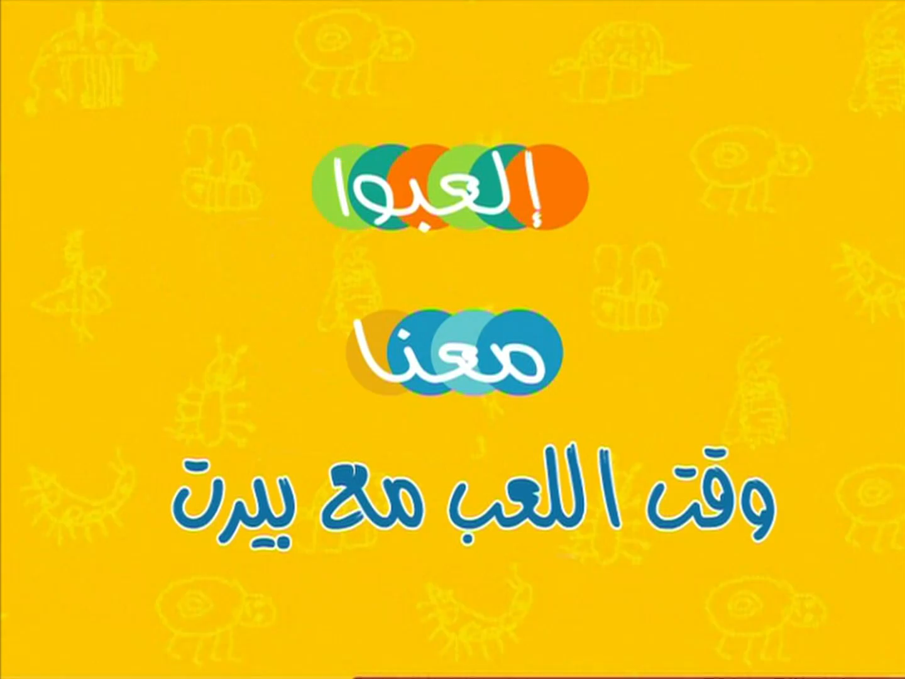
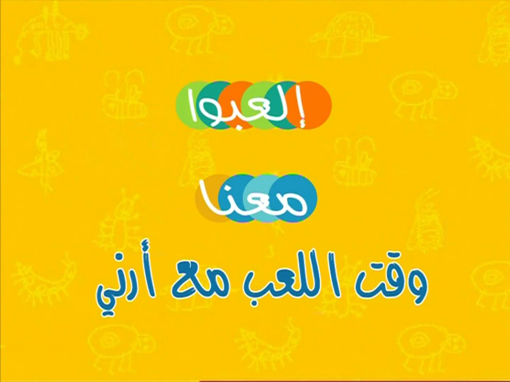
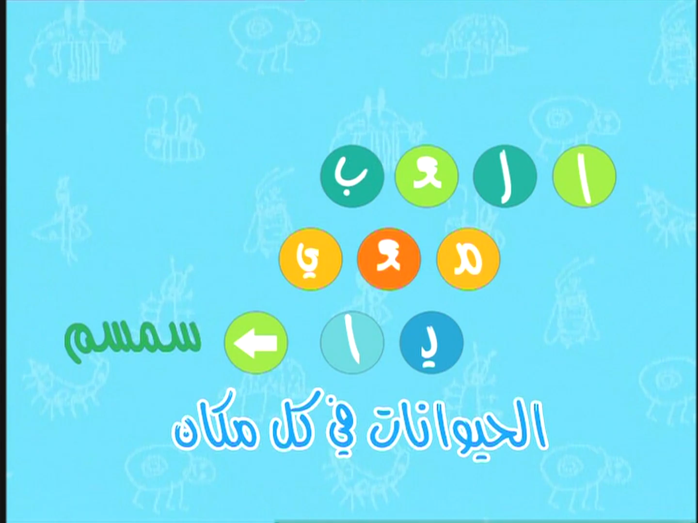
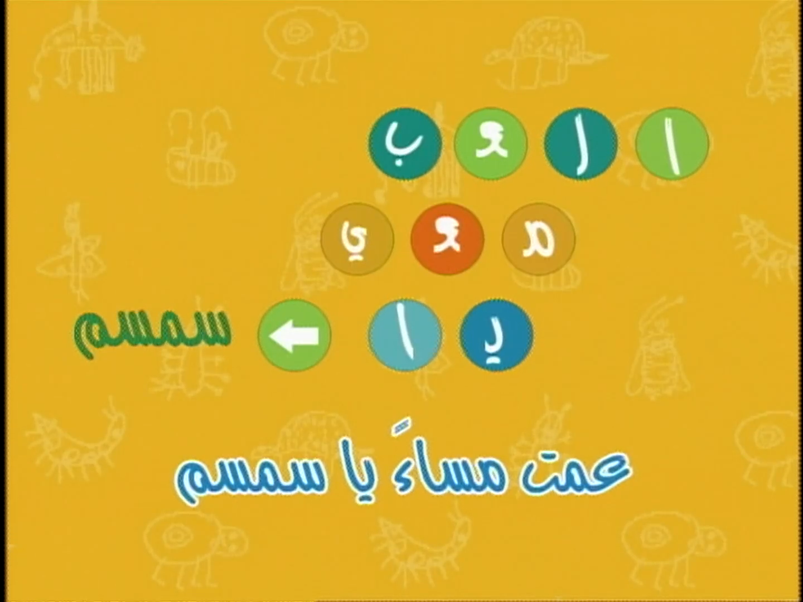

Seasons Dubbed: DVD Releases Only
Release: DVD, Oznoz (formerly)
Dubbing Studio: Image Production House
|
|---|
| Title: العب معنا Seasons Dubbed: DVD Releases Only Release: DVD, Oznoz (formerly) Dubbing Studio: Image Production House |
|  |
|---|
| Playtime with Bert archive.org Note: This episode is mixed in a way where the vocals |
|  |
| Playtime with Ernie archive.org Note: This episode is mixed in a way where the vocals |
 |
|---|
| Title: العب بالسمسم Seasons Dubbed: DVD Releases Only Release: DVD, Oznoz (formerly) Dubbing Studio: Image Production House |
|  |
|---|
| Animals Everywhere archive.org |
|  |
| Good Night Sesame archive.org Note: This episode is mixed in a way where the vocals |